Chapitre 3 La mise en page
Pour être finalisée, une carte thématique doit contenir certains éléments additionnels tels que : le titre, l’auteur, la source, l’échelle, l’orientation…
3.1 Les données d’exemple
Les lignes suivantes importent les couches d’information spatiales situées dans le fichier geopackage lot46.gpkg.
library(sf)
# import des communes du Lot
com <- st_read("data/lot46.gpkg", layer = "commune", quiet = TRUE)
# import des départments français
dep <- st_read("data/lot46.gpkg", layer = "departement", quiet = TRUE)
# import des restaurants
resto <- st_read("data/lot46.gpkg", layer = "restaurant", quiet = TRUE)
# import des routes
route <- st_read("data/lot46.gpkg", layer = "route", quiet = TRUE)3.2 Les thèmes
La fonction mf_theme() défini un thème cartographique. L’utilisation d’un thème permet de définir plusieurs paramètres graphiques qui sont ensuite appliqués aux cartes créées avec mapsf. Ces paramètres sont : les marges de la carte, la couleur principale, la couleur de fond, la position et l’aspect du titre. Un thème peut également être défini avec les fonctions mf_init() et mf_export().
3.2.1 Utiliser un thème prédéfini
Une série de thèmes prédéfinis est disponible par défaut (voir ?mf_theme).
library(mapsf)
# utilisation d'une couleur de fond pour la figure, pour voir l'utilisation des marges
opar <- par(mfrow = c(2,2))
# Utilisation d'un thème prédéfini
mf_theme("default")
mf_map(com)
mf_title("Theme : 'default'")
mf_theme("darkula")
mf_map(com)
mf_title("Theme : 'darkula'")
mf_theme("candy")
mf_map(com)
mf_title("Theme : 'candy'")
mf_theme("nevermind")
mf_map(com)
mf_title("Theme : 'nevermind'")
par(opar)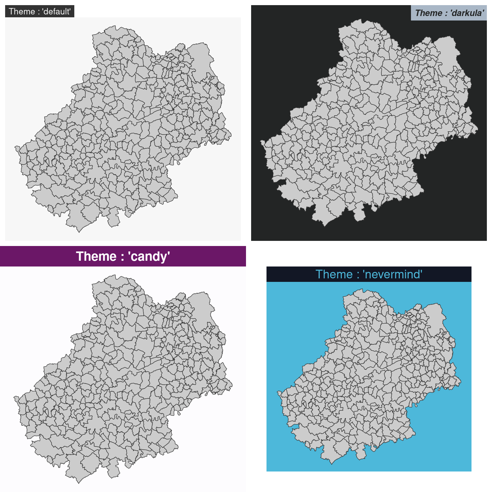
3.2.2 Modifier un thème existant
Il est possible de modifier un thème existant. Dans cet exemple, nous utilisons le thème “default” et nous en modifions quelques paramètres.
library(mapsf)
opar <- par(mfrow = c(1,2))
mf_theme("default")
mf_map(com)
mf_title("default")
mf_theme("default", tab = FALSE, font = 4, bg = "grey60", pos = "center")
mf_map(com)
mf_title("modified default")
par(opar)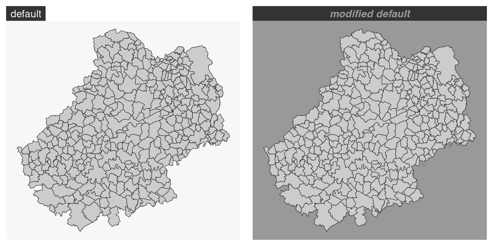
3.2.3 Créer un thème
Il est également possible de créer un thème.
mf_theme(
bg = "lightblue", # couleur de fond
fg = "tomato1", # couleur principale
mar = c(0,0,1.5,0), # marges
tab = FALSE, # style "onglet" pour le titre
inner = FALSE, # titre à l'intérieur de la zone de carte ou à l'extérieur
line = 1.5, # espace dédié au titre
pos = "center", # position du titre
cex = 1.2, # taille du titre
font = 2 # type de fonte pour le titre
)
mf_map(com)
mf_title("New theme")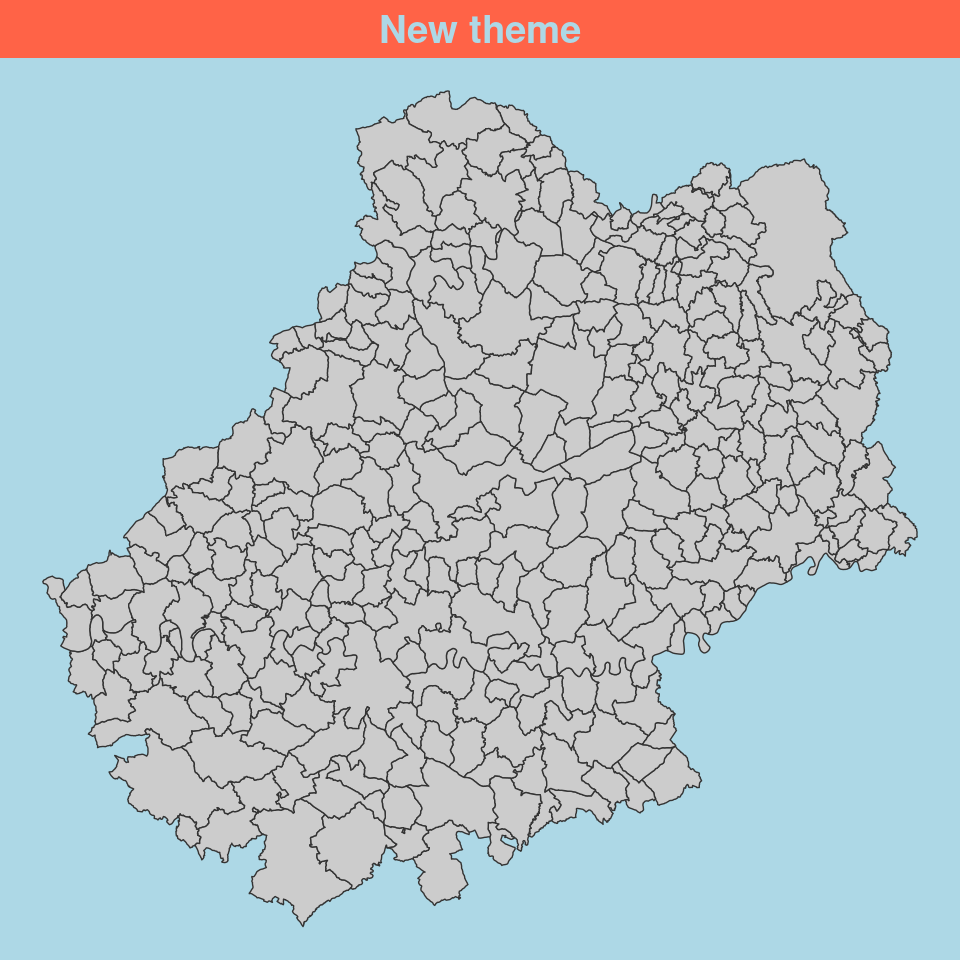
3.3 Les titres
La fonction `mf_title() permet d’ajouter un titre à une carte.
mf_theme("default")
mf_map(com)
mf_title("Titre de la carte")
Il est possible de personnaliser l’aspect du titre.
mf_map(com)
mf_title(
txt = "Titre de la carte",
pos = "center",
tab = FALSE,
bg = "tomato3",
fg = "lightblue",
cex = 1,
line = 1.2,
font = 1,
inner = FALSE
)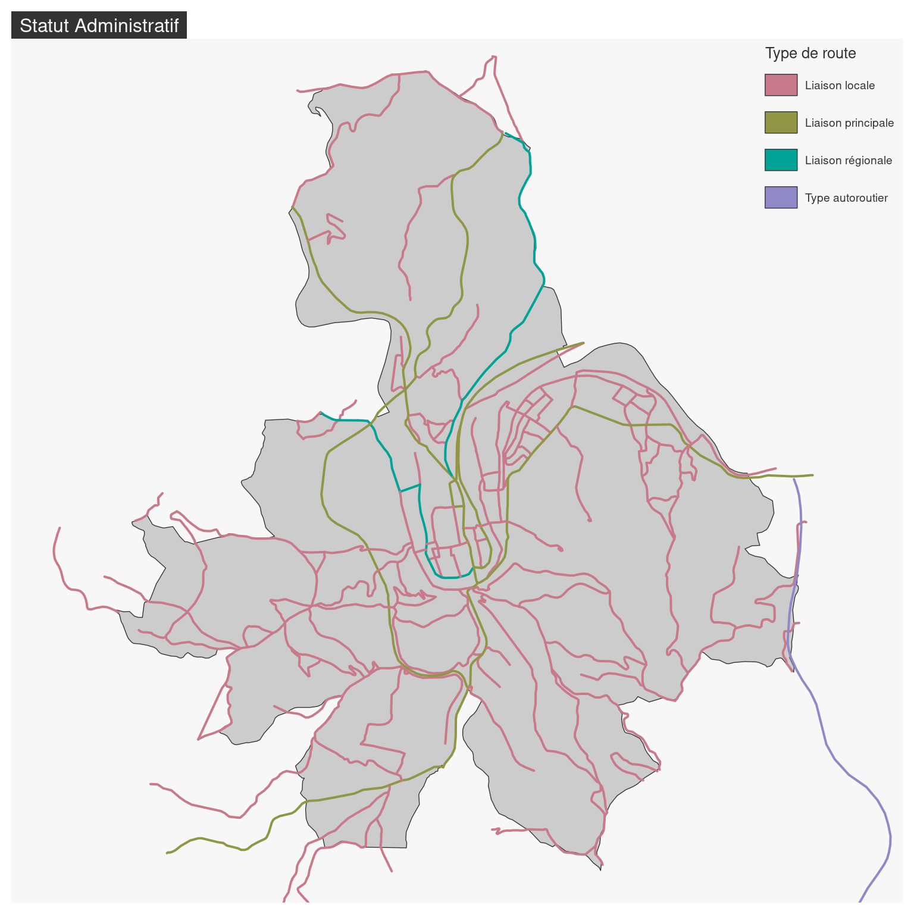
3.4 Flèche d’orientation
La fonction mf_arrow() permet de choisir la position et l’aspect de la flèche d’orientation.
mf_map(com)
mf_arrow()3.5 Échelle
La fonction mf_scale() permet de choisir la position et l’aspect de l’échelle.
mf_map(com)
mf_scale(
size = 20,
lwd = 2,
cex = 1.2,
)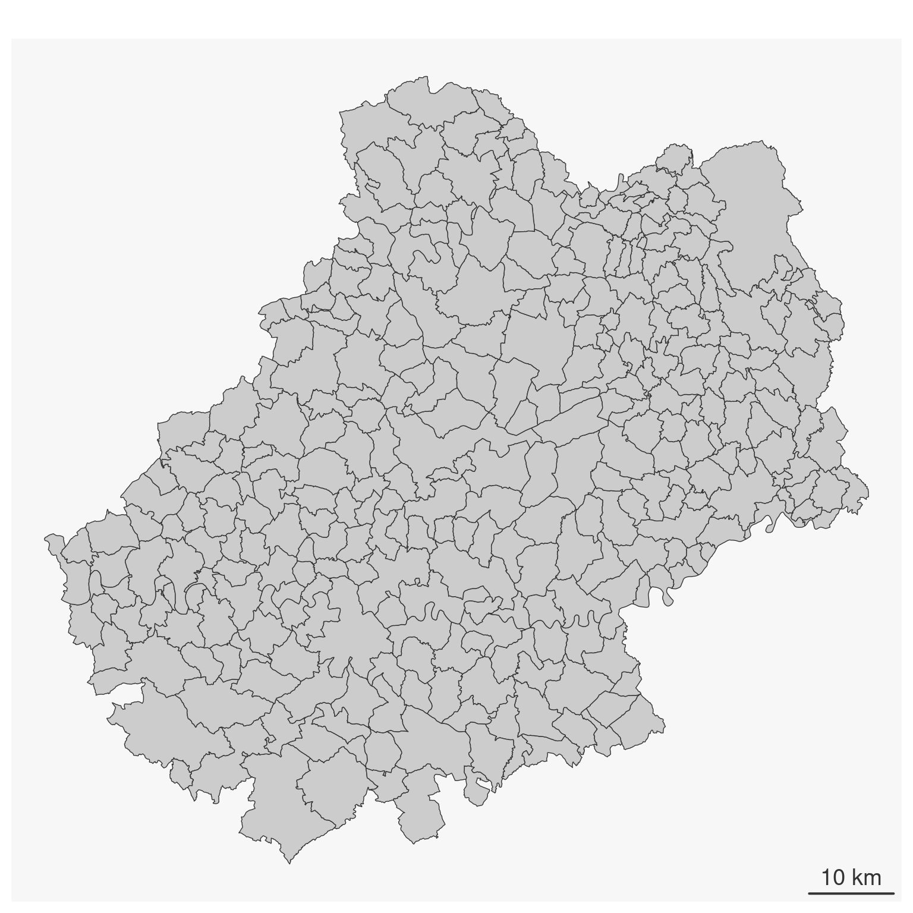
3.6 Crédits
La fonction mf_credits() permet d’afficher une ligne de crédits (sources, auteur…).
mf_map(com)
mf_credits("IGN\nGiraud & Pécout, 2021")
3.7 Habillage complet
La fonction mf_layout() permet d’afficher tous ces éléments.
mf_map(com)
mf_layout(
title = "Martinique",
credits = "IGN\nGiraud & Pécout, 2021",
arrow = TRUE
)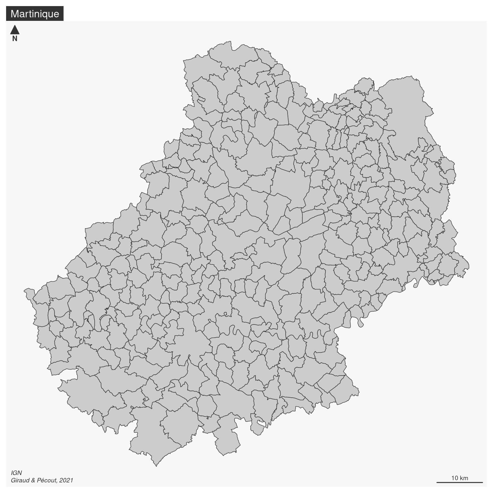
3.8 Annotations
mf_map(com)
mf_annotation(com[com$NOM_COM == "Cahors",], txt = "Cahors", halo = TRUE, cex = 1.5)3.9 Les légendes
mf_map(com)
mf_legend(
type = "prop",
val = c(1000,500,200,10),
inches = .4,
title = "Population",
pos = "topleft"
)
mf_legend(
type = "choro",
val = c(0,10,20,30,40),
pal = "Greens",
pos = "bottomright",
val_rnd = 0
)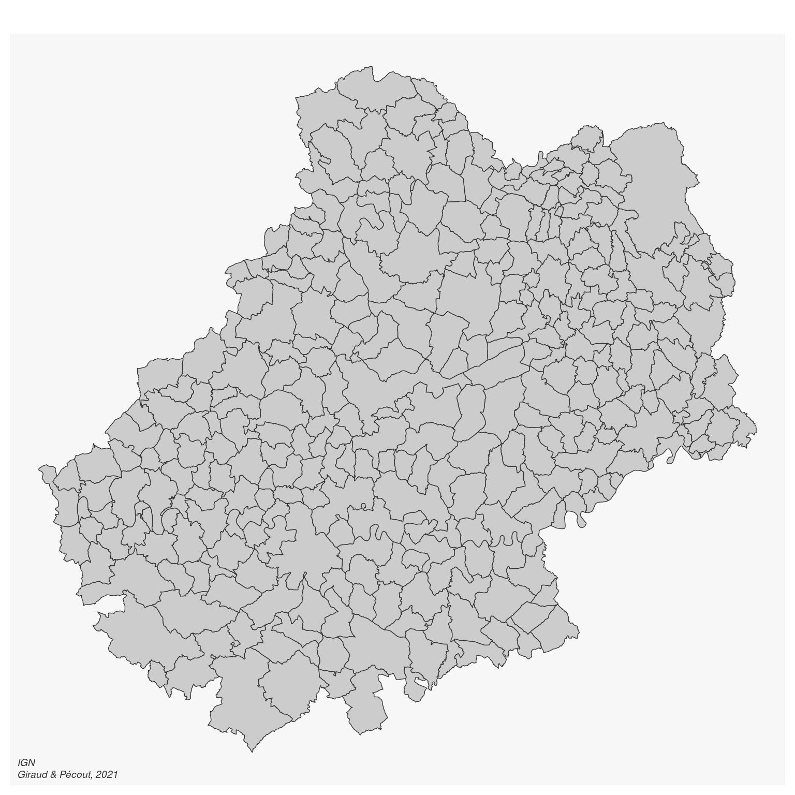
3.10 Étiquettes
La fonction mf_label() est dédiée à l’afichage d’étiquettes.
com_sel <- com[st_intersects(com, com[com$NOM_COM == "Cahors", ], sparse = F), ]
mf_map(com_sel)
mf_label(
x = com_sel,
var = "NOM_COM",
col= "black",
halo = TRUE,
overlap = FALSE,
lines = FALSE
)
mf_scale()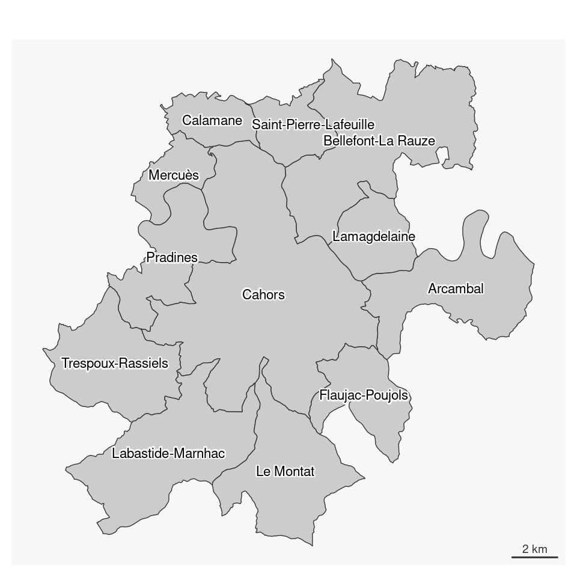
L’argument halo = TRUE permet d’afficher un léger halo autour des étiquettes et l’argument overlap = FALSE permet de créer des étiquettes ne se recouvrant pas.
3.11 Centrer la carte sur une région
La fonction mf_init() permet d’initialiser une carte en la centrant sur une objet spatial.
mf_init(x = com_sel, theme = "iceberg")
mf_map(com, add = TRUE)
mf_map(com_sel, col = NA, border = "red", lwd = 2, add = TRUE)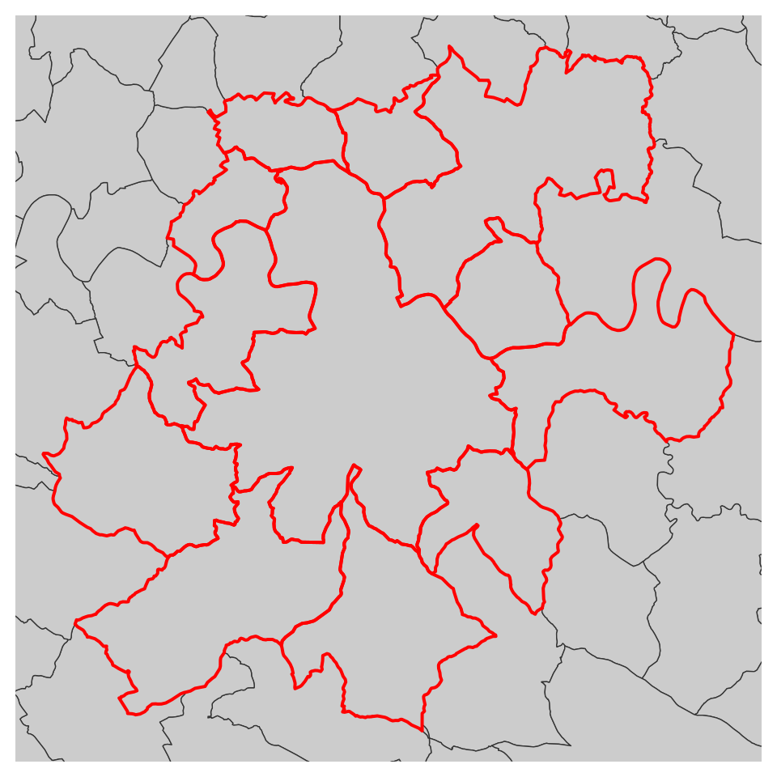
3.12 Afficher plusieurs cartes sur la même figure
Il faut ici utiliser l’argument mfrow de la fonction par(). Le premier chiffre représente le nombre lignes et le deuxième le nombre de colonnes.
# define the figure layout (1 row, 2 columns)
par(mfrow = c(1, 2))
# first map
mf_map(com)
mf_map(com, "AGR_H", "prop")
mf_title("Agriculture, hommes")
# second map
mf_map(com)
mf_map(com, "TER_F", "prop")
mf_title("Tertiaire, femmes")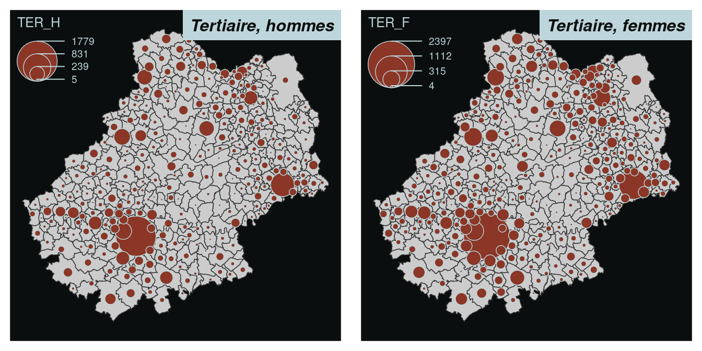
3.13 Export des cartes
Il est assez difficile d’exporter des figures (cartes ou autres) dont le ratio hauteur/largeur est satisfaisant. Le ratio par défaut des figures au format png est de 1 (480x480 pixels) :
c2c <- com[com$INSEE_COM == "46138", ]
png("img/c2c1.png")
mf_map(c2c)
mf_title("Cœur de Causse")
dev.off() Sur cette carte beaucoup d’espace est perdu au nord et au sud de l’île.
Sur cette carte beaucoup d’espace est perdu au nord et au sud de l’île.
La fonction mf_export() permet des exports de cartes dont le ratio hauteur/largeur est contrôlé et correspond à celui d’un objet spatial.
mf_export(c2c, "img/c2c2.png", width = 480)
mf_map(c2c)
mf_title("Cœur de Causse")
dev.off() L’emprise de cette carte est exactement celle de la région affichée.
L’emprise de cette carte est exactement celle de la région affichée.
3.14 Ajouter une image sur une carte
Cela peut être utile pour ajouter un logo, un pictogramme. La fonction readPNG() du package png permet l’ajout d’images sur une figure.
mf_theme("default", mar = c(0,0,0,0))
library(png)
# import de l'image
logo <- readPNG("img/Logo CG 46 - Bleu.png")
# dimension de l'image en unité de la carte
pp <- dim(logo)[2:1] * 20
# Définition d'un point d'encrage de l'image dans la figure, ici
# le coin supérieur gauche de la bounding box du département
xy <- st_bbox(com)[c(1,4)]
mf_map(com, col = "#D1914D", border = "white")
rasterImage(
image = logo,
xleft = xy[1],
ybottom = xy[2] - pp[2],
xright = xy[1] + pp[1],
ytop = xy[2]
)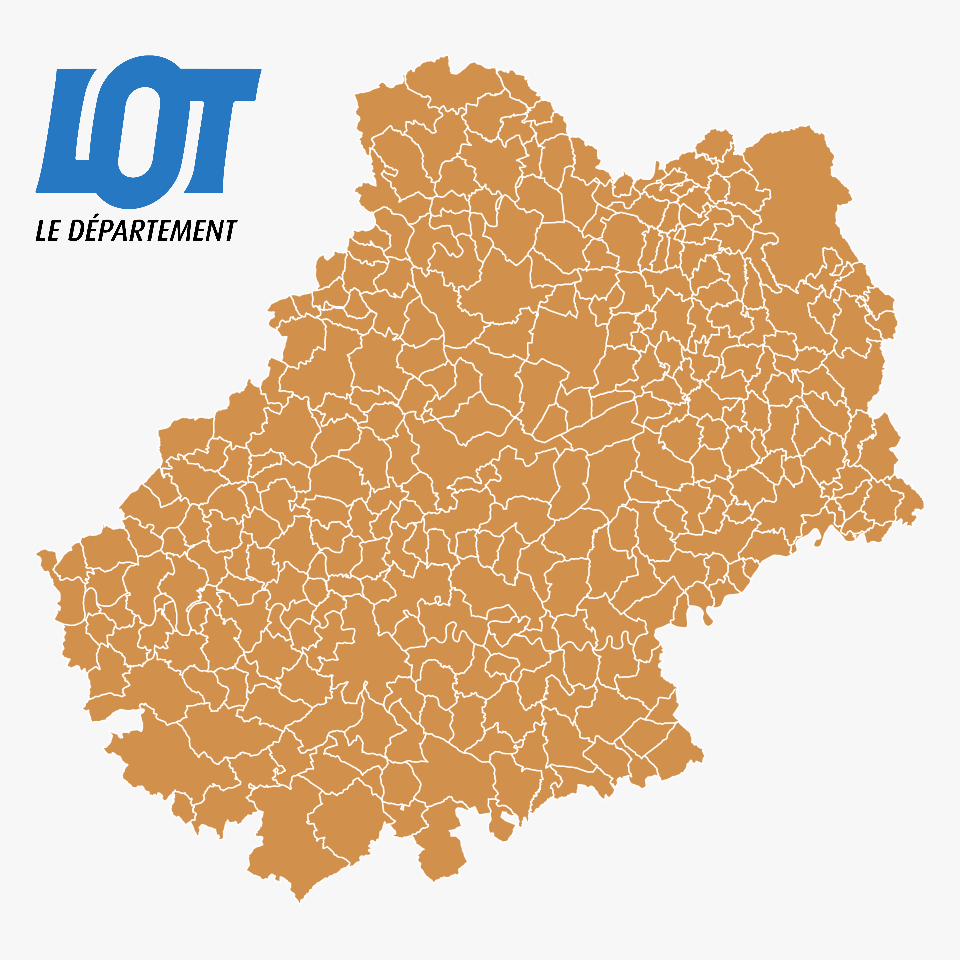
3.15 Placer précisément un élément sur la carte
La fonction locator() permet de cliquer sur une figure et d’obtenir les coordonnées d’un point dans le système de coordonnées de la figure (de la carte).
locator()peut être utilisée sur la plupart des graphiques (pas ceux produits avec ggplot2).
3.16 Ajouter un ombrage à une couche
mf_shadow(com)
mf_map(com, add=TRUE)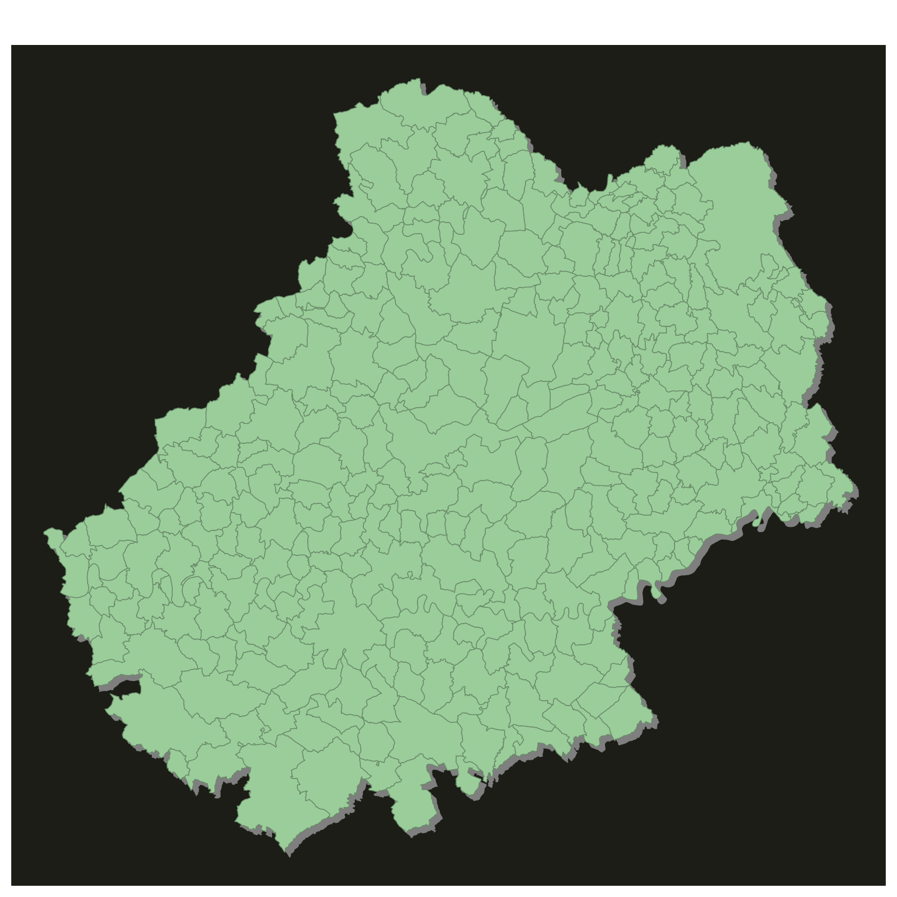
3.17 Création de cartons
mf_init(x = com_sel, theme = "agolalight", expandBB = c(0,0,0,.5))
mf_map(com, add = TRUE)
mf_map(com_sel, col = "tomato4", border = "tomato1", lwd = 2, add = TRUE)
mf_inset_on(x = dep, pos = "topright", cex = .3)
mf_map(dep, lwd = .5, border= "grey90")
mf_map(com_sel, col = "tomato4", border = "tomato1", lwd = .5, add = TRUE)
mf_scale(size = 10, pos = "bottomright", cex = .6, lwd = .5)
mf_inset_off()
mf_inset_on(x = com, pos = "bottomright", cex = .3)
mf_map(com, lwd = .5, border= "grey90")
mf_map(com_sel, col = "tomato4", border = "tomato1", lwd = .5, add = TRUE)
mf_scale(size = 10, pos = "bottomright", cex = .6, lwd = .5)
mf_inset_off()
mf_title("Cahors et ses environs")
mf_scale(1)